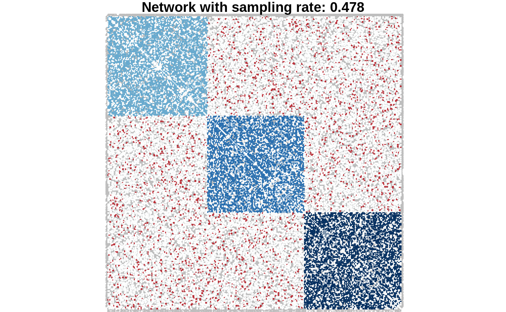

The function simulate produces an instance of an object with class SBM_sampler.
sampledNetwork
An object of class R6ClassGenerator of length 24.
All fields of this class are only accessible for reading. This class comes with a basic plot and print methods
samplingRatepercentage of observed dyads
nNodesnumber of nodes
nDyadsnumber of dyads
is_directeddirection
adjacencyMatrixadjacency matrix (with NA)
covarMatrixthe matrix of covariates (if applicable)
covarArraythe array of covariates (if applicable)
dyadslist of potential dyads in the network
missingDyadsarray indices of missing dyads
observedDyadsarray indices of observed dyads
samplingMatrixmatrix of observed and non-observed edges
observedNodesvector of observed and non-observed nodes
NAsboolean for NA entries in the adjacencyMatrix
## SBM parameters directed <- FALSE N <- 300 # number of nodes Q <- 3 # number of clusters alpha <- rep(1,Q)/Q # mixture parameter pi <- diag(.45,Q) + .05 # connectivity matrix ## simulate a SBM without covariates sbm <- missSBM::simulate(N, alpha, pi, directed) ## Sample network data sampled_network <- missSBM::sample( adjacencyMatrix = sbm$adjacencyMatrix, sampling = "double-standard", parameters = c(0.4, 0.8) ) print(sampled_network)#> Sampled Network #> ================================================================== #> Structure for storing a sampled network in missSBM. #> ================================================================== #> * Useful fields #> $nNodes, $nDyads, $is_directed #> $adjacencyMatrix, $covarMatrix, $covarArray #> $dyads, $missingDyads, $observedDyads, $observedNodes #> $samplingRate, $samplingMatrix, $NAs #> * Useful method: plot()plot(sampled_network)